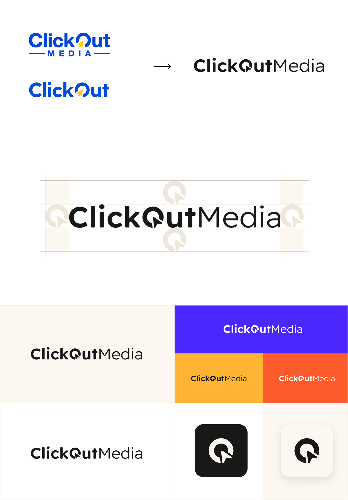
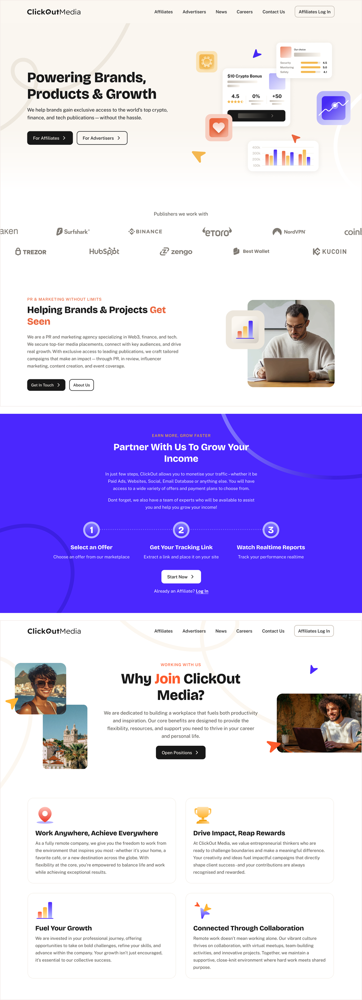
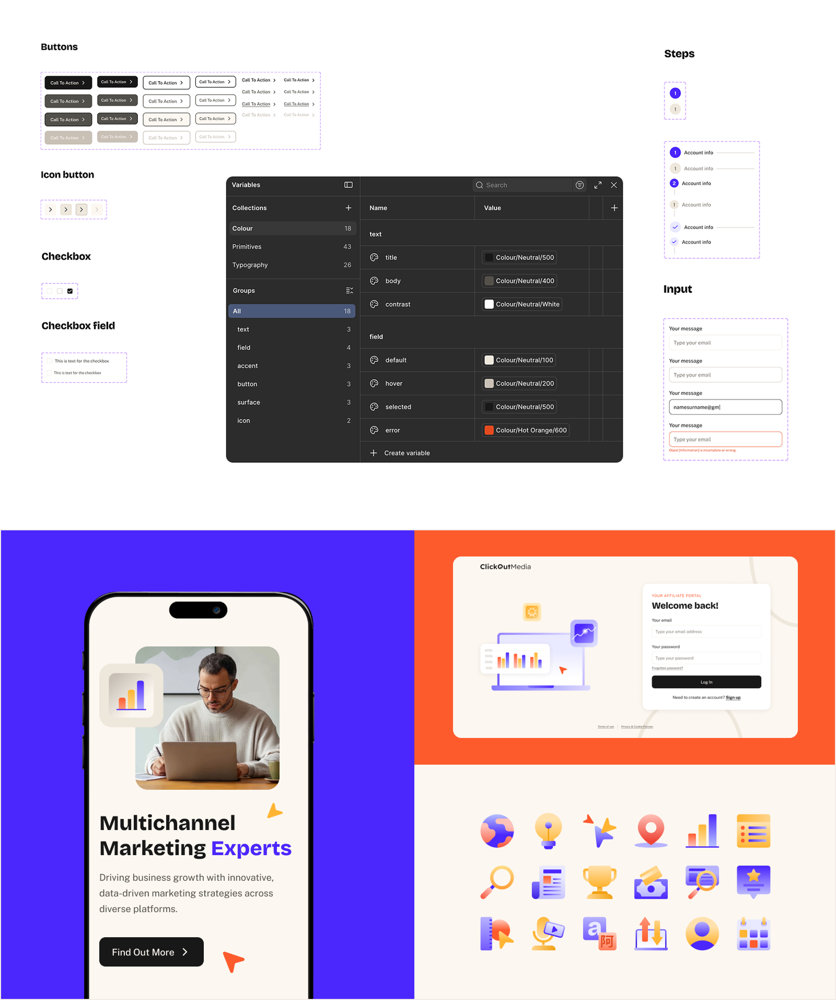

The Problem
ClickOut Media is an international affiliate marketing company reaching 50M+ monthly users across crypto, finance, and tech publications. When I joined, the company had two separate logos, two websites, and no unified visual language — a fragmented identity that didn't reflect the scale or ambition of the business.
The brief was clear: build one brand. Cohesive, scalable, and bold enough to hold up across every touchpoint — from the main website to the affiliate platform, social media, internal decks, and beyond.
My Role
I led the full visual and brand direction of this project, from initial strategy and exploration through to execution and company-wide rollout. This included defining the new brand identity, building the design system and brand guidelines, designing the website, updating the affiliate platform, and creating the full suite of cross-platform assets. I also presented the rebrand internally to the wider team through a dedicated launch deck.
The Strategy
The goal was to make the brand feel bolder, sharper and future-proofed. I moved the identity away from looking like an outdated, small affiliate network towards a "Global Media" look. This meant:
- One Logo: I cleaned up the logo to make it simpler and easier to read.
- A modern and contemporary visual system with strong foundations and recognisable identity.
- A Design System, easily scalable and with strong foundations.
- Brand Guidelines, aimed for everyone in the company, giving them the ability to translate any business requirement in line with our brand.
- Brand collateral and assets for all employees, ready to use and implement.

The Website & Affiliate Platform Redesign
The website was reimagined with a remarkable interface, combining the different elements of our new brand to bring it to life — bold and clean colour, strong and clear typography, modern illustrations, custom iconography and organic lines.
The new design included asymmetrical and fluid layouts that create a sense of movement, flow and depth.
We moved towards a single website, which aligns all our sources into a unified brand and site, giving users a global understanding of who we are, what we do and what it means to be part of the business.
The affiliate platform UI was updated to align with the new visual identity — bringing the same colour system, typography and component language into the logged-in experience, so the brand felt consistent from first impression to daily use.

The Design System
Beyond the identity, the project required a full visual system that teams could use day to day. This included custom iconography designed to be geometric and minimalistic, illustrations using rounded shapes and palette gradients, organic line elements for background depth, and a graphics system built around product UI components.
The system was built to scale — clear enough that anyone on the team could apply it correctly, flexible enough to work across web, social, email and print.

A Rollout Made for Everyone
This brand was built to be used by everyone in a simple and straightforward way. Not only for the product design team, but also having in mind every employee and aspect of our new brand. I rolled out new tools, assets, templates, and resources to make the transition simple, in shared folders easily reachable. Those included:
- Easy-to-follow brand guidelines.
- Ready-to-use folders with all the new logos, icons and visual assets.
- New templates for Google Slides and email signatures.
The Results
The new brand was successfully rolled out across all platforms, ready to use and implement in a seamless and smooth way.
- Unified two fragmented brand identities into a single cohesive visual system, rolled out across all company touchpoints.
- Designed and launched a new website replacing two separate platforms, serving a company with 50M+ monthly users and 200+ media partners.
- Built a complete design system and brand guidelines adopted across the full team, from product and marketing to external communications.
- Updated the affiliate platform UI to align with the new brand, improving consistency across the product ecosystem.
- Created a full suite of cross-platform assets including social templates, email signatures, internal decks and presentation templates.